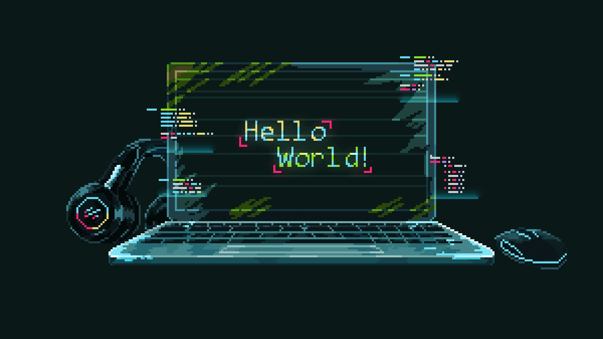

¡Hola! Soy Marina Oliva
Estudiante de Desarrollo de Software y Química
Me apasiona la tecnología, el análisis de datos y la programación.
Mi objetivo es integrar la programación y el análisis de datos en entornos de laboratorio, combinando ciencia y tecnología para generar soluciones prácticas y eficientes.
Este es el comienzo de mi portfolio personal, donde iré compartiendo mis conocimientos y proyectos.